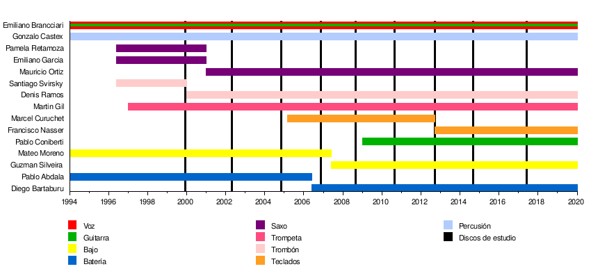

No Te Va Gustar se formó en 1994, con la mayoría de sus miembros alrededor de los 16 años. La banda empezó con un cuarteto compuesto por Emiliano Brancciari (voz y guitarra), Gonzalo Castex (percusión), Mateo Moreno (bajo) y Pablo Abdala (batería). En 1996 se sumaron Pamela Retamoza (saxofón), Emiliano García (saxo) y Santiago Svirsky (trombón). Unos meses después se integró Martín Gil (trompeta). En 1997, la banda agregó otros estilos musicales tales como reggae, ska y murga.
En 1998, la banda empieza a ser conocida y resulta ganadora del III Festival de la Canción de Montevideo y del concurso organizado por la Comisión de la Juventud de la Intendencia Municipal de la capital uruguaya.
En 1999 recorren diferentes escenarios montevideanos. En julio de ese año comienzan la grabación de su primer disco, Sólo de noche, terminado de editar en diciembre en forma independiente. Tras el lanzamiento del disco, Svirsky abandonó el grupo y fue reemplazado por Denis Ramos.
Durante el verano de 2000, la banda realizó un extenso tour por la costa este uruguaya, recorriendo las ciudades de Punta del Diablo, Valizas, Cabo Polonio, La Pedrera, La Paloma, Atlántida, El Pinar y Solymar. Luego tocaron por primera vez en Argentina, el 27 de febrero, y por primera vez en Bahía Blanca, en el Club Liniers. En abril se presentó oficialmente «Sólo de noche». Un año después el número de miembros se redujo, porque los saxofonistas (Retamoza y García) decidieron irse. Acto seguido, entró a la banda Mauricio Ortiz en saxo.
Durante 2002 grabaron su segundo disco, Este fuerte viento que sopla, en la ciudad de Santiago de Chile. A partir de ese momento, logran consolidarse como una de las principales bandas referentes de rock uruguayo, con una agenda muy agitada y alcanzando el disco de oro, a tan solo seis meses del lanzamiento del disco.
En 2004, la banda comienza una gira por la Costa Atlántica, compartiendo escenarios con La Zurda y Bersuit Vergarabat. Intensificaron sus visitas a la Argentina, atrayendo cada vez mayor público, presentándose en las ciudades de La Plata, Morón, Ramos Mejía, Tandil, Lomas de Zamora y realizando un recital en Cemento el 29 de octubre. A fines de ese mismo año salió a la venta su tercer disco, Aunque cueste ver el sol, y realizan un tour por Europa abarcando más de cuarenta ciudades, entre ellas Múnich, Hamburgo, Bremen, Berlín, Viena, Berna y Madrid. Ese mismo año No Te Va Gustar festejaba sus 10 años como banda en Montevideo (Peatonal Sarandí).
En 2005, su placa fue presentada en vivo ante 15 000 personas en el Velódromo Municipal de Montevideo. El show fue grabado para su futura edición en DVD a finales de noviembre de ese año. En Buenos Aires, la presentación oficial se realizó el 30 del mismo mes en el Teatro de Colegiales. También se unió un nuevo miembro: Marcel Curuchet, en teclado.
El 22 de abril de 2006 se volvieron a presentar en el Velódromo Municipal de Montevideo, pero esta vez con localidades agotadas. Tuvieron que agregar una fecha más para el día siguiente. Un hecho similar les había ocurrido semanas antes en Argentina cuando se presentaron el 8 y 9 de abril en el Teatro de Flores, y también por localidades agotadas, tuvieron que agregar una fecha más, pero al no tener fechas disponibles debieron repetir la actuación el mismo día en el mismo lugar. A mitad de año, la banda graba su cuarto disco, Todo es tan inflamable, que fue presentado en diferentes ciudades del Uruguay y Argentina. También en este año, el baterista Pablo Abdala abandonó el grupo por temas personales.
El 17 de marzo de 2007 hacen la presentación oficial de su disco Todo es tan inflamable en el recién remodelado Estadio Charrúa de Montevideo ante un estimado de más de 20 000 personas. Esa noche además estrenaron baterista: Diego Bartaburu (unido en 2006), quien desde entonces se consolidó como integrante de la banda. Pablo Abdala, el exbaterista, es actualmente responsable de la producción artística. En ese mismo año, se alejó el bajista Mateo Moreno, por motivos personales y diferencias respecto al camino que estaba tomando la banda. Rápidamente se incorporó su nuevo bajista, Guzmán Silveira. Iban a presentar oficialmente en Buenos Aires El disco naranja el 10 de mayo en el Luna Park, pero por motivos ajenos a la banda el concierto se postergó para el 12 de mayo en el Estadio Obras Sanitarias y por entradas agotadas tuvieron que agregar una fecha para el día anterior. Sin embargo, la fecha del 12 no pudo ser, porque Bersuit Vergarabat tocaba ese día en el estadio de River, a pocas cuadras de Obras, y por seguridad, la fecha de No Te Va Gustar se pasó al domingo 13. A fin de año salió a la venta el DVD TaN, donde se reviven las canciones del disco Todo es tan inflamable que la banda interpretó casi 9 meses antes en el Estadio Charrúa de Montevideo.
El 2008 arrancó el 5 de abril en el Estadio River Plate con el Quilmes Rock, donde compartieron escenario con Guasones, Los Ratones Paranoicos, Las Pelotas y Los Piojos. Posteriormente ofrecieron tres recitales en el Teatro de Verano de Montevideo, el 11, 12 y 13 de abril, y luego tocaron por primera vez en el Luna Park de Buenos Aires, el 12 de junio. Estos no fueron los únicos recitales multitudinarios de No Te Va Gustar en el año, ya que el 6 de septiembre tocaron ante 7 000 personas en el Malvinas Argentinas (Microestadio AAAJ) de Buenos Aires, y el 11 de octubre realizaron junto a La Vela Puerca un concierto histórico en el Estadio Charrúa ante más de 23 000 personas, en el que en algunos momentos del recital estaban las dos bandas tocando a la vez en el escenario. El 22 de ese mes, sacaron su quinto álbum de estudio llamado El camino más largo, grabado en Elefante Blanco (Montevideo) entre mayo y agosto del mismo año.
